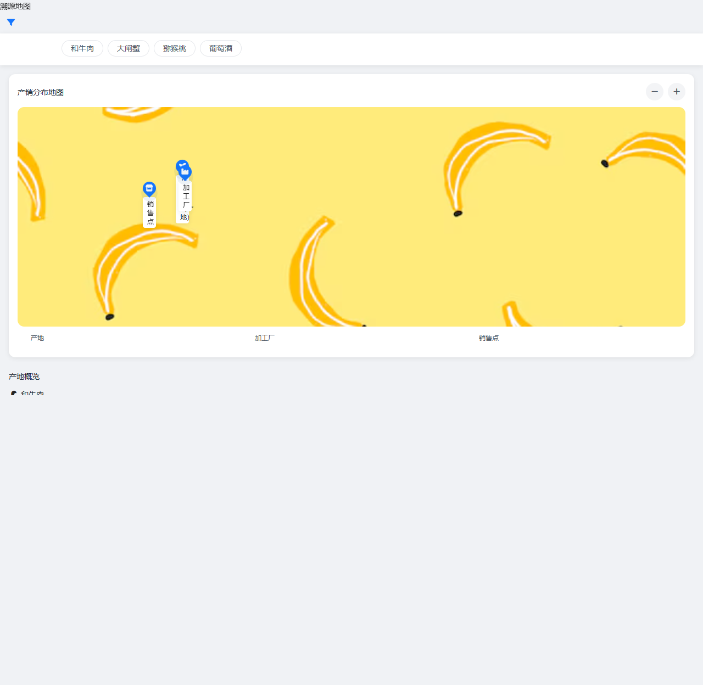
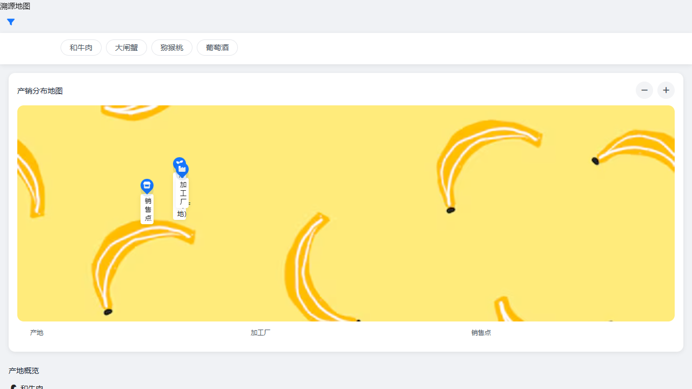
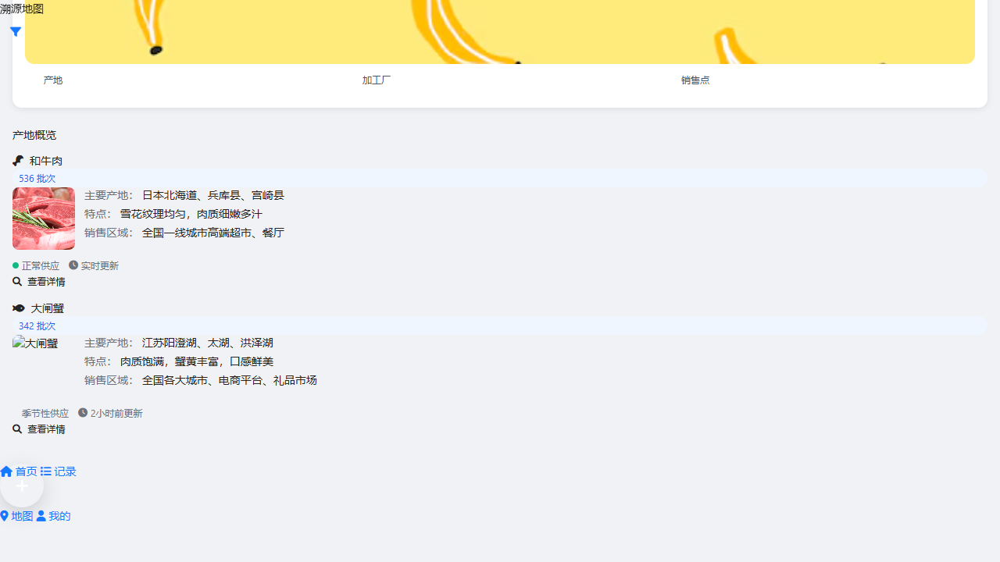
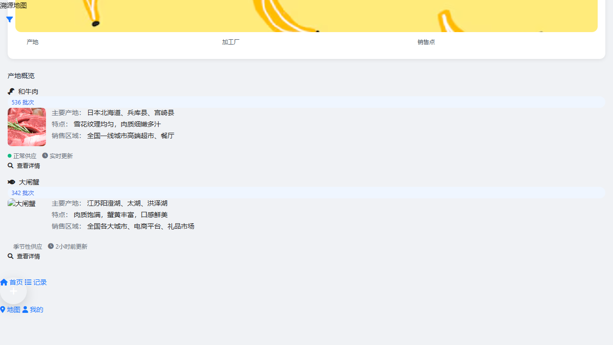

{
"id": "button-0-1743659227740",
"text": "全部产品",
"tagName": "BUTTON",
"classes": "flex-shrink-0 bg-[#00467F] text-white rounded-full text-sm px-4 py-1",
"xpath": "//html[1]/body[1]/div[1]/div[2]/div[1]/button[1]",
"disabled": false,
"rect": {
"x": 16,
"y": 73,
"width": 88,
"height": 30
},
"attributes": {
"href": null,
"onclick": null,
"role": null,
"type": null
}
}
溯源地图 - 食品溯源系统
路径: /pages/trace/trace-map.html
检测到 10 个按钮
页面截图
按钮交互测试结果
按钮属性: ID: button-1-1743659227740, 类名: flex-shrink-0 bg-white text-gray-600 rounded-full text-sm px-4 py-1 border border-gray-200
交互结果: 页面状态发生变化
点击前

点击后

按钮属性: ID: button-2-1743659227740, 类名: flex-shrink-0 bg-white text-gray-600 rounded-full text-sm px-4 py-1 border border-gray-200
交互结果: 页面状态发生变化
点击前

点击后
按钮属性: ID: button-3-1743659227740, 类名: flex-shrink-0 bg-white text-gray-600 rounded-full text-sm px-4 py-1 border border-gray-200
交互结果: 页面状态发生变化
点击前

点击后
按钮属性: ID: button-5-1743659227740, 类名: bg-gray-100 w-8 h-8 rounded-full flex items-center justify-center text-gray-600
交互结果: 页面状态发生变化
点击前

点击后

按钮属性: ID: button-6-1743659227740, 类名: bg-gray-100 w-8 h-8 rounded-full flex items-center justify-center text-gray-600
交互结果: 页面状态发生变化
点击前

点击后
按钮属性: ID: button-7-1743659227740, 类名: trace-button trace-button-secondary text-xs py-1
交互结果: 页面状态发生变化
点击前

点击后

按钮属性: ID: button-8-1743659227740, 类名: trace-button trace-button-secondary text-xs py-1
交互结果: 页面状态发生变化
点击前

点击后
